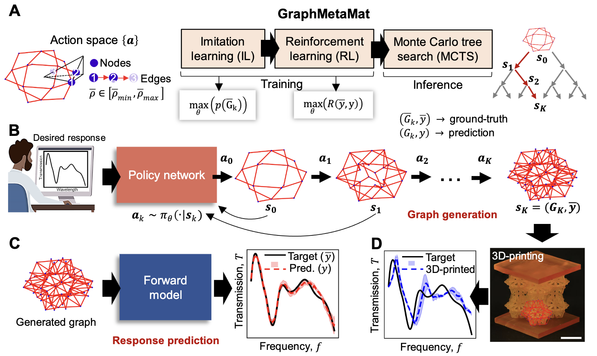
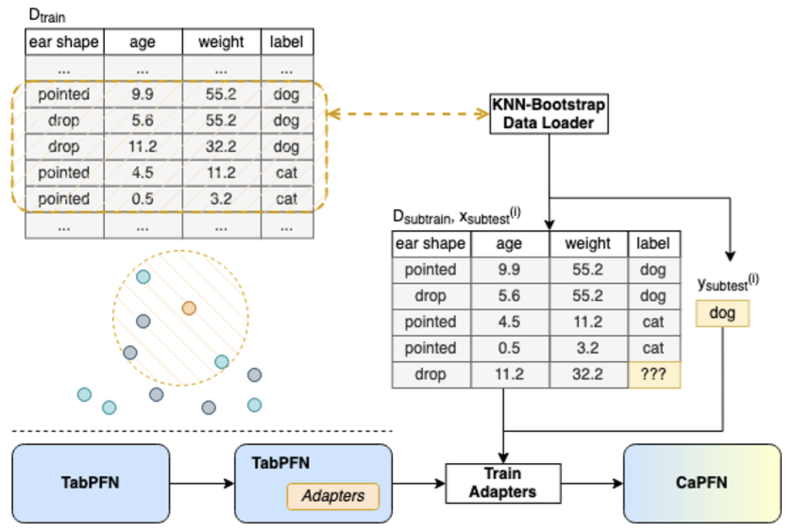
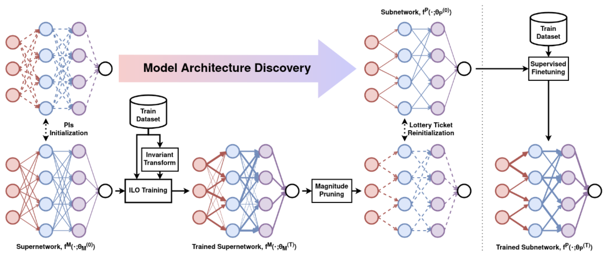
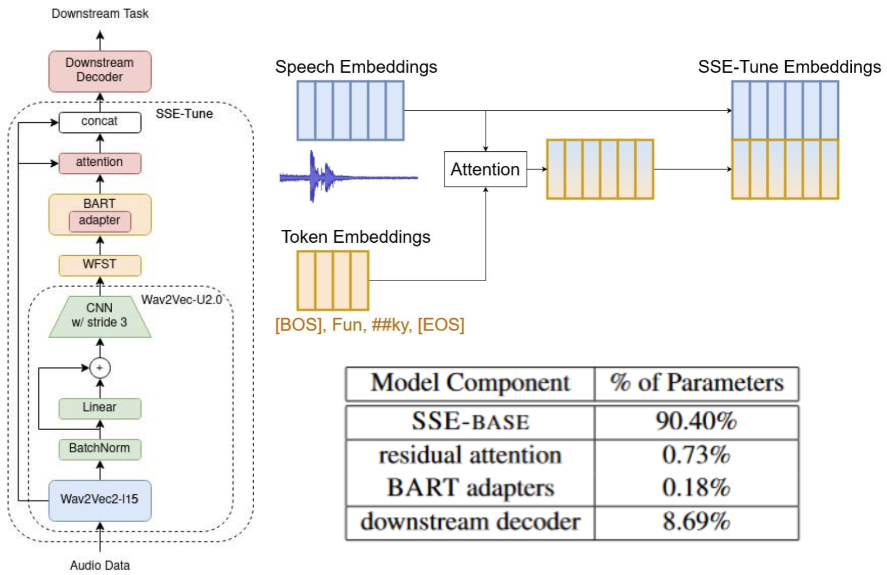
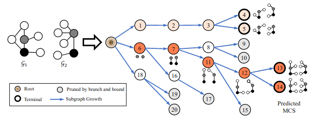

About
Hi! I am a research scientist working at Meta. I work on foundation model training, model scaling, and user modeling. I received my Ph.D. in Computer Science from UCLA, advised by Professor Yizhou Sun and Professor Wei Wang. My research interests include foundation models, multimodal learning, efficient architectures, and reinforcement learning. If you are also interested, feel free to reach out!
Selected Publications
-
Designing metamaterials with programmable nonlinear responses and geometric constraints in graph space
Used reinforcement learning and tree search to design metamaterials with target mechanical responses.

-
Mixture of In-Context Prompters for Tabular PFNs
Trained and routed specialized in-context learning experts to scale tabular foundation models to larger datasets.

-
Neural Network Pruning for Invariance Learning
Studied how pruning can uncover network structures that preserve learned invariances.

-
Introducing Semantics into Speech Encoders
Transferred semantic information from language models into speech encoders without labeled audio transcriptions.

-
GLSearch: Maximum Common Subgraph Detection via Learning to Search
Used a graph neural network and reinforcement learning to guide branch-and-bound search.



Experience
-
Meta Ads · Research Scientist
Worked on foundation model training and scale-up.
-
Amazon Web Services · Applied Scientist Intern
Worked on post-training Chronos, a time-series foundation model.
-
Uber AI · Research Engineer Intern
Scaled TabPFN inference to larger tabular datasets.
-
Meta Reality Labs · Research Scientist Intern
Worked on aligning speech and language models using unlabeled data.
-
Uber AI · Machine Learning Engineer Intern
Developed scalable feature selection for ETA prediction.
-
Uber · Software Engineering Intern
Implemented pricing changes for Uber rides.
-
NASA Jet Propulsion Laboratory · Software Engineering Intern
Built tools to process and validate spacecraft commands.
Research Service
Area chair for ICLR and ICML. Reviewer or program committee member for NeurIPS, AAAI, KDD, AISTATS, and ACL.